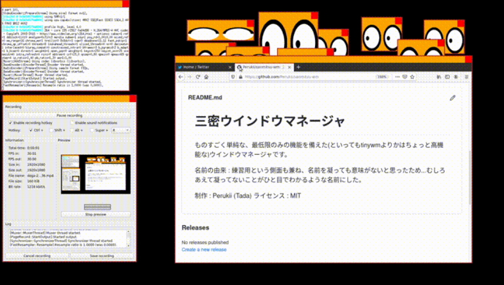

三密WM(さんみつウインドウマネージャ)

GitHub
リリース日 : 2020/07/26
使用言語 : C (gcc)
開発環境 : Ubuntu (20.04)
テスト用に開発した簡易ウインドウマネージャ。
ウインドウの作成・装飾・管理といった機能をサポートしている。
テスト実装であったため、実用には向いていないものの
本プロジェクトで身につけた知識は、miteWMをはじめとした後のプロジェクトに受け継いでいる。
完成品の持つ目的よりも、開発する行為そのものの価値に重きを置いて開発した作品。
使用するには、ターミナルエミュレータ等、アプリケーションを実行できる環境を別途用意する必要がある。